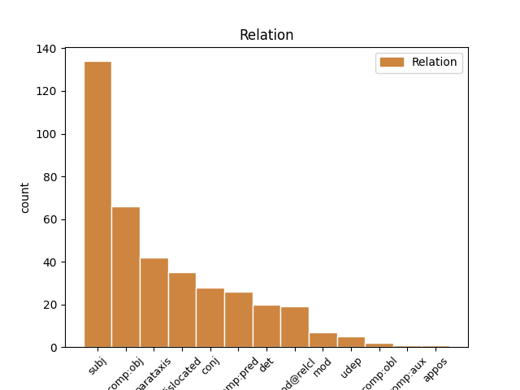
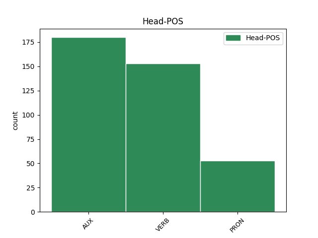
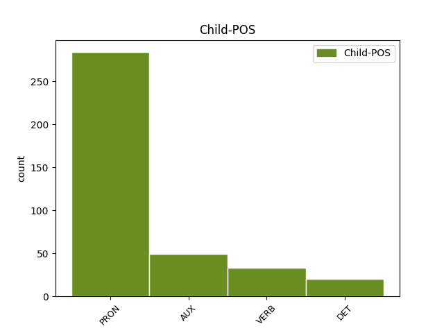

Distribution of features within this leaf



Agreement Rules sorted by frequency.
When the head token is AUX and the dependent token is PRON.
1 Bu _ _ _ _ 0 _ _ _
2 ñaareel _ _ _ _ 0 _ _ _
3 bi _ _ _ _ 0 _ _ _
4 it _ _ _ _ 0 _ _ _
5 nag _ _ _ _ 0 _ _ _
6 moom _ _ _ _ 0 _ _ _
7 , _ _ _ _ 0 _ _ _
8 li bi PRON PRON Definite=Def|Deixis=Prox|NounClass=Wol7|Number=Sing|Person=3|PronType=Rel 17 dislocated _ _
9 tax _ _ _ _ 0 _ _ _
10 Muusaa _ _ _ _ 0 _ _ _
11 indee _ _ _ _ 0 _ _ _
12 ko _ _ _ _ 0 _ _ _
13 nii _ _ _ _ 0 _ _ _
14 , _ _ _ _ 0 _ _ _
15 mujjantal _ _ _ _ 0 _ _ _
16 ba _ _ _ _ 0 _ _ _
17 la la AUX INFL FocusType=Compl|Mood=Ind|Number=Sing|Person=3 0 _ _ _
18 di _ _ _ _ 0 _ _ _
19 dàkk _ _ _ _ 0 _ _ _
20 , _ _ _ _ 0 _ _ _
21 mu _ _ _ _ 0 _ _ _
22 di _ _ _ _ 0 _ _ _
23 baati _ _ _ _ 0 _ _ _
24 " _ _ _ _ 0 _ _ _
25 Asta _ _ _ _ 0 _ _ _
26 Waalo _ _ _ _ 0 _ _ _
27 " _ _ _ _ 0 _ _ _
28 . _ _ _ _ 0 _ _ _
When the head token is VERB and the dependent token is PRON.
1 Kenn benn PRON PRON NounClass=Wol1|Number=Sing|PronType=Ind,Neg 2 subj _ _
2 réerewul réere VERB VERB Mood=Ind|Number=Sing|Person=3|Polarity=Neg|VerbForm=Fin 0 _ _ _
3 ne _ _ _ _ 0 _ _ _
4 njàngum _ _ _ _ 0 _ _ _
5 làmmiñi _ _ _ _ 0 _ _ _
6 réew _ _ _ _ 0 _ _ _
7 mi _ _ _ _ 0 _ _ _
8 rafle _ _ _ _ 0 _ _ _
9 na _ _ _ _ 0 _ _ _
10 lool _ _ _ _ 0 _ _ _
11 i _ _ _ _ 0 _ _ _
12 téere _ _ _ _ 0 _ _ _
13 , _ _ _ _ 0 _ _ _
14 ndaxam _ _ _ _ 0 _ _ _
15 de _ _ _ _ 0 _ _ _
16 bindkat _ _ _ _ 0 _ _ _
17 ya _ _ _ _ 0 _ _ _
18 a _ _ _ _ 0 _ _ _
19 ngi _ _ _ _ 0 _ _ _
20 di _ _ _ _ 0 _ _ _
21 góor-górlu _ _ _ _ 0 _ _ _
22 , _ _ _ _ 0 _ _ _
23 ci _ _ _ _ 0 _ _ _
24 fànna _ _ _ _ 0 _ _ _
25 bu _ _ _ _ 0 _ _ _
26 ne _ _ _ _ 0 _ _ _
27 nag _ _ _ _ 0 _ _ _
28 ( _ _ _ _ 0 _ _ _
29 njàngum _ _ _ _ 0 _ _ _
30 duruus _ _ _ _ 0 _ _ _
31 ak _ _ _ _ 0 _ _ _
32 bind _ _ _ _ 0 _ _ _
33 , _ _ _ _ 0 _ _ _
34 xayma _ _ _ _ 0 _ _ _
35 , _ _ _ _ 0 _ _ _
36 wér-gi-yaram _ _ _ _ 0 _ _ _
37 ... _ _ _ _ 0 _ _ _
38 ) _ _ _ _ 0 _ _ _
39 ; _ _ _ _ 0 _ _ _
When the head token is AUX and the dependent token is AUX.
1 Amul _ _ _ _ 0 _ _ _
2 kenn _ _ _ _ 0 _ _ _
3 ku _ _ _ _ 0 _ _ _
4 ñu _ _ _ _ 0 _ _ _
5 war _ _ _ _ 0 _ _ _
6 gétén _ _ _ _ 0 _ _ _
7 ngir _ _ _ _ 0 _ _ _
8 i _ _ _ _ 0 _ _ _
9 xalaatam _ _ _ _ 0 _ _ _
10 , _ _ _ _ 0 _ _ _
11 doonte _ _ _ _ 0 _ _ _
12 sax _ _ _ _ 0 _ _ _
13 ci _ _ _ _ 0 _ _ _
14 wàllu _ _ _ _ 0 _ _ _
15 diine _ _ _ _ 0 _ _ _
16 la la AUX COP Mood=Ind|Number=Sing|Person=3|VerbForm=Fin 0 _ _ _
17 , _ _ _ _ 0 _ _ _
18 na na AUX INFL Aspect=Perf|Mood=Opt|Number=Sing|Person=3 16 parataxis _ _
19 fekk _ _ _ _ 0 _ _ _
20 rekk _ _ _ _ 0 _ _ _
21 seen _ _ _ _ 0 _ _ _
22 ag _ _ _ _ 0 _ _ _
23 génne _ _ _ _ 0 _ _ _
24 yàqul _ _ _ _ 0 _ _ _
25 dara _ _ _ _ 0 _ _ _
26 ci _ _ _ _ 0 _ _ _
27 jàmmu _ _ _ _ 0 _ _ _
28 nekkeel _ _ _ _ 0 _ _ _
29 ji _ _ _ _ 0 _ _ _
30 àtte _ _ _ _ 0 _ _ _
31 tëral _ _ _ _ 0 _ _ _
32 . _ _ _ _ 0 _ _ _
When the head token is PRON and the dependent token is DET.
1 Su _ _ _ _ 0 _ _ _
2 nga _ _ _ _ 0 _ _ _
3 xàmmee _ _ _ _ 0 _ _ _
4 nag _ _ _ _ 0 _ _ _
5 ne _ _ _ _ 0 _ _ _
6 Maam _ _ _ _ 0 _ _ _
7 Asta _ _ _ _ 0 _ _ _
8 Waalo _ _ _ _ 0 _ _ _
9 mu _ _ _ _ 0 _ _ _
10 a _ _ _ _ 0 _ _ _
11 di _ _ _ _ 0 _ _ _
12 maami _ _ _ _ 0 _ _ _
13 Sëriñ _ _ _ _ 0 _ _ _
14 Tuubaa _ _ _ _ 0 _ _ _
15 , _ _ _ _ 0 _ _ _
16 nga _ _ _ _ 0 _ _ _
17 daldi _ _ _ _ 0 _ _ _
18 yëg _ _ _ _ 0 _ _ _
19 te _ _ _ _ 0 _ _ _
20 jàpp _ _ _ _ 0 _ _ _
21 ne _ _ _ _ 0 _ _ _
22 ndekete _ _ _ _ 0 _ _ _
23 riir _ _ _ _ 0 _ _ _
24 mi _ _ _ _ 0 _ _ _
25 ak _ _ _ _ 0 _ _ _
26 bari _ _ _ _ 0 _ _ _
27 gi _ _ _ _ 0 _ _ _
28 ak _ _ _ _ 0 _ _ _
29 xér _ _ _ _ 0 _ _ _
30 gi _ _ _ _ 0 _ _ _
31 , _ _ _ _ 0 _ _ _
32 lii bii PRON PRON Deixis=Prox|DeixisRef=1|NounClass=Wol7|Number=Sing|PronType=Dem 0 _ _ _
33 lépp bépp DET DET NounClass=Wol7|Number=Sing|PronType=Tot 32 det _ _
34 nammul _ _ _ _ 0 _ _ _
35 lu _ _ _ _ 0 _ _ _
36 dul _ _ _ _ 0 _ _ _
37 tàbbiji _ _ _ _ 0 _ _ _
38 ci _ _ _ _ 0 _ _ _
39 kiiraayu _ _ _ _ 0 _ _ _
40 Sëriñ _ _ _ _ 0 _ _ _
41 Tuubaa _ _ _ _ 0 _ _ _
42 . _ _ _ _ 0 _ _ _
When the head token is PRON and the dependent token is VERB.
1 Ñépp _ _ _ _ 0 _ _ _
2 am _ _ _ _ 0 _ _ _
3 nañu _ _ _ _ 0 _ _ _
4 sañ-sañ _ _ _ _ 0 _ _ _
5 ci _ _ _ _ 0 _ _ _
6 yem _ _ _ _ 0 _ _ _
7 añu _ _ _ _ 0 _ _ _
8 ab _ _ _ _ 0 _ _ _
9 liggéey _ _ _ _ 0 _ _ _
10 , _ _ _ _ 0 _ _ _
11 su _ _ _ _ 0 _ _ _
12 fekkee _ _ _ _ 0 _ _ _
13 ne _ _ _ _ 0 _ _ _
14 ñu _ _ _ _ 0 _ _ _
15 a _ _ _ _ 0 _ _ _
16 yem _ _ _ _ 0 _ _ _
17 liggéey _ _ _ _ 0 _ _ _
18 , _ _ _ _ 0 _ _ _
19 ci _ _ _ _ 0 _ _ _
20 lu bu PRON PRON NounClass=Wol7|Number=Sing|Person=3|PronType=Rel 0 _ _ _
21 àndul ànd VERB VERB Mood=Ind|Number=Sing|Person=3|Polarity=Neg|VerbForm=Fin 20 mod@relcl _ _
22 ak _ _ _ _ 0 _ _ _
23 benn _ _ _ _ 0 _ _ _
24 xàjjaatle _ _ _ _ 0 _ _ _
25 . _ _ _ _ 0 _ _ _
When the head token is PRON and the dependent token is PRON.
1 Jabet _ _ _ _ 0 _ _ _
2 mën _ _ _ _ 0 _ _ _
3 na _ _ _ _ 0 _ _ _
4 a _ _ _ _ 0 _ _ _
5 jàpp _ _ _ _ 0 _ _ _
6 siddit _ _ _ _ 0 _ _ _
7 yi _ _ _ _ 0 _ _ _
8 , _ _ _ _ 0 _ _ _
9 ba _ _ _ _ 0 _ _ _
10 ki _ _ _ _ 0 _ _ _
11 mu _ _ _ _ 0 _ _ _
12 dal _ _ _ _ 0 _ _ _
13 dootul _ _ _ _ 0 _ _ _
14 am _ _ _ _ 0 _ _ _
15 yëg-yëg _ _ _ _ 0 _ _ _
16 ci _ _ _ _ 0 _ _ _
17 yaramam _ _ _ _ 0 _ _ _
18 , _ _ _ _ 0 _ _ _
19 maanaam _ _ _ _ 0 _ _ _
20 du _ _ _ _ 0 _ _ _
21 yëg _ _ _ _ 0 _ _ _
22 lu bu PRON PRON NounClass=Wol7|Number=Sing|Person=3|PronType=Rel 0 _ _ _
23 tàng _ _ _ _ 0 _ _ _
24 mbaa _ _ _ _ 0 _ _ _
25 lu bu PRON PRON NounClass=Wol7|Number=Sing|Person=3|PronType=Rel 22 conj _ _
26 sedd _ _ _ _ 0 _ _ _
27 . _ _ _ _ 0 _ _ _
When the head token is VERB and the dependent token is AUX.
1 Waaye _ _ _ _ 0 _ _ _
2 bu _ _ _ _ 0 _ _ _
3 bindee _ _ _ _ 0 _ _ _
4 " _ _ _ _ 0 _ _ _
5 Waalo _ _ _ _ 0 _ _ _
6 " _ _ _ _ 0 _ _ _
7 it _ _ _ _ 0 _ _ _
8 , _ _ _ _ 0 _ _ _
9 jubluwu jublu VERB VERB Mood=Ind|Number=Sing|Person=3|Polarity=Neg|VerbForm=Fin 0 _ _ _
10 ci _ _ _ _ 0 _ _ _
11 réewum _ _ _ _ 0 _ _ _
12 Waalo _ _ _ _ 0 _ _ _
13 doŋŋ _ _ _ _ 0 _ _ _
14 , _ _ _ _ 0 _ _ _
15 àddina _ _ _ _ 0 _ _ _
16 si _ _ _ _ 0 _ _ _
17 ak _ _ _ _ 0 _ _ _
18 fu _ _ _ _ 0 _ _ _
19 nit _ _ _ _ 0 _ _ _
20 mënti _ _ _ _ 0 _ _ _
21 jóge _ _ _ _ 0 _ _ _
22 la la AUX INFL FocusType=Compl|Mood=Ind|Number=Sing|Person=3 9 parataxis _ _
23 ci _ _ _ _ 0 _ _ _
24 jublu _ _ _ _ 0 _ _ _
25 . _ _ _ _ 0 _ _ _
When the head token is VERB and the dependent token is VERB.
1 Amul am VERB VERB Mood=Ind|Number=Sing|Person=3|Polarity=Neg|VerbForm=Fin 0 _ _ _
2 nit _ _ _ _ 0 _ _ _
3 ku _ _ _ _ 0 _ _ _
4 ñu _ _ _ _ 0 _ _ _
5 mën _ _ _ _ 0 _ _ _
6 xañ _ _ _ _ 0 _ _ _
7 askanaleem _ _ _ _ 0 _ _ _
8 , _ _ _ _ 0 _ _ _
9 naka _ _ _ _ 0 _ _ _
10 noonu _ _ _ _ 0 _ _ _
11 yit _ _ _ _ 0 _ _ _
12 mëneesu mën VERB VERB Mood=Ind|Number=Sing|Person=0|Polarity=Neg|VerbForm=Fin 1 parataxis _ _
13 ko _ _ _ _ 0 _ _ _
14 a _ _ _ _ 0 _ _ _
15 xañ _ _ _ _ 0 _ _ _
16 sañ-sañu _ _ _ _ 0 _ _ _
17 soppi _ _ _ _ 0 _ _ _
18 askanaleem _ _ _ _ 0 _ _ _
19 . _ _ _ _ 0 _ _ _
When the head token is AUX and the dependent token is VERB.
1 Te _ _ _ _ 0 _ _ _
2 itam _ _ _ _ 0 _ _ _
3 mën _ _ _ _ 0 _ _ _
4 na na AUX INFL Aspect=Perf|Mood=Ind|Number=Sing|Person=3 0 _ _ _
5 a _ _ _ _ 0 _ _ _
6 meli _ _ _ _ 0 _ _ _
7 bés _ _ _ _ 0 _ _ _
8 ni _ _ _ _ 0 _ _ _
9 mag _ _ _ _ 0 _ _ _
10 ñi _ _ _ _ 0 _ _ _
11 soloolul solool VERB VERB Mood=Ind|Number=Sing|Person=3|Polarity=Neg|VerbForm=Fin 4 parataxis _ _
12 leneen _ _ _ _ 0 _ _ _
13 lu _ _ _ _ 0 _ _ _
14 moy _ _ _ _ 0 _ _ _
15 ay _ _ _ _ 0 _ _ _
16 lim _ _ _ _ 0 _ _ _
17 . _ _ _ _ 0 _ _ _
When the head token is PRON and the dependent token is AUX.
1 Amul _ _ _ _ 0 _ _ _
2 kenn benn PRON PRON NounClass=Wol1|Number=Sing|PronType=Ind,Neg 0 _ _ _
3 ku _ _ _ _ 0 _ _ _
4 , _ _ _ _ 0 _ _ _
5 mënees _ _ _ _ 0 _ _ _
6 na na AUX INFL Aspect=Perf|Mood=Ind|Number=Sing|Person=3 2 mod@relcl _ _
7 ko _ _ _ _ 0 _ _ _
8 jàpp _ _ _ _ 0 _ _ _
9 , _ _ _ _ 0 _ _ _
10 walla _ _ _ _ 0 _ _ _
11 téj _ _ _ _ 0 _ _ _
12 , _ _ _ _ 0 _ _ _
13 walla _ _ _ _ 0 _ _ _
14 gàddaayloo _ _ _ _ 0 _ _ _
15 , _ _ _ _ 0 _ _ _
16 ci _ _ _ _ 0 _ _ _
17 lu _ _ _ _ 0 _ _ _
18 teguwul _ _ _ _ 0 _ _ _
19 fenn _ _ _ _ 0 _ _ _
20 . _ _ _ _ 0 _ _ _
Disagree Examples:
1 Kon _ _ _ _ 0 _ _ _
2 ñooñu boobu PRON PRON Deixis=Prox|DeixisRef=2|NounClass=Wol2|Number=Plur|PronType=Dem 10 subj _ _
3 mujj _ _ _ _ 0 _ _ _
4 nekk _ _ _ _ 0 _ _ _
5 Dammeel _ _ _ _ 0 _ _ _
6 Kajoor _ _ _ _ 0 _ _ _
7 , _ _ _ _ 0 _ _ _
8 ay _ _ _ _ 0 _ _ _
9 doxandéem _ _ _ _ 0 _ _ _
10 lañu la AUX COP Mood=Ind|Number=Sing|Person=3|VerbForm=Fin 0 _ _ _
11 yu _ _ _ _ 0 _ _ _
12 nekkoon _ _ _ _ 0 _ _ _
13 ca _ _ _ _ 0 _ _ _
14 réew _ _ _ _ 0 _ _ _
15 moomu _ _ _ _ 0 _ _ _
16 ca _ _ _ _ 0 _ _ _
17 njëlbéen _ _ _ _ 0 _ _ _
18 . _ _ _ _ 0 _ _ _
1 Ñu _ _ _ _ 0 _ _ _
2 tegoon _ _ _ _ 0 _ _ _
3 ca _ _ _ _ 0 _ _ _
4 kaw _ _ _ _ 0 _ _ _
5 gor _ _ _ _ 0 _ _ _
6 ña _ _ _ _ 0 _ _ _
7 ay _ _ _ _ 0 _ _ _
8 njotti _ _ _ _ 0 _ _ _
9 bopp _ _ _ _ 0 _ _ _
10 yu bu PRON PRON NounClass=Wol8|Number=Plur|Person=3|PronType=Rel 12 comp:obj _ _
11 kenn _ _ _ _ 0 _ _ _
12 àttanul àttan VERB VERB Mood=Ind|Number=Sing|Person=3|Polarity=Neg|VerbForm=Fin 0 _ _ _
13 . _ _ _ _ 0 _ _ _
1 Ndànk-ndànk _ _ _ _ 0 _ _ _
2 ñu _ _ _ _ 0 _ _ _
3 di _ _ _ _ 0 _ _ _
4 toog _ _ _ _ 0 _ _ _
5 , _ _ _ _ 0 _ _ _
6 ci _ _ _ _ 0 _ _ _
7 ndoorteel _ _ _ _ 0 _ _ _
8 gi _ _ _ _ 0 _ _ _
9 , _ _ _ _ 0 _ _ _
10 ci _ _ _ _ 0 _ _ _
11 barab _ _ _ _ 0 _ _ _
12 yi bi PRON PRON Definite=Def|Deixis=Prox|NounClass=Wol8|Number=Plur|Person=3|PronType=Rel 15 comp:obj _ _
13 soose _ _ _ _ 0 _ _ _
14 yi _ _ _ _ 0 _ _ _
15 nekkul nekk VERB VERB Mood=Ind|Number=Sing|Person=3|Polarity=Neg|VerbForm=Fin 0 _ _ _
16 woon _ _ _ _ 0 _ _ _
17 . _ _ _ _ 0 _ _ _
1 Bu bu PRON PRON NounClass=Wol5|Number=Sing|Person=3|PronType=Rel 4 dislocated _ _
2 njëkk _ _ _ _ 0 _ _ _
3 bi _ _ _ _ 0 _ _ _
4 dinañu di AUX AUX Aspect=Imp|Mood=Ind|Number=Plur|Person=3|Tense=Fut 0 _ _ _
5 ko _ _ _ _ 0 _ _ _
6 wax _ _ _ _ 0 _ _ _
7 itam _ _ _ _ 0 _ _ _
8 " _ _ _ _ 0 _ _ _
9 jataayu _ _ _ _ 0 _ _ _
10 mag _ _ _ _ 0 _ _ _
11 ñi _ _ _ _ 0 _ _ _
12 " _ _ _ _ 0 _ _ _
13 . _ _ _ _ 0 _ _ _
1 Lu bu PRON PRON NounClass=Wol7|Number=Sing|Person=3|PronType=Rel 10 dislocated _ _
2 mel _ _ _ _ 0 _ _ _
3 ni _ _ _ _ 0 _ _ _
4 Senegaal _ _ _ _ 0 _ _ _
5 ak _ _ _ _ 0 _ _ _
6 Gaambi _ _ _ _ 0 _ _ _
7 ak _ _ _ _ 0 _ _ _
8 Faleme _ _ _ _ 0 _ _ _
9 nekkoon _ _ _ _ 0 _ _ _
10 nañu na AUX INFL Aspect=Perf|Mood=Ind|Number=Plur|Person=3 0 _ _ _
11 ci _ _ _ _ 0 _ _ _
12 suufu _ _ _ _ 0 _ _ _
13 Jolof _ _ _ _ 0 _ _ _
14 gu _ _ _ _ 0 _ _ _
15 mag _ _ _ _ 0 _ _ _
16 ga _ _ _ _ 0 _ _ _
17 . _ _ _ _ 0 _ _ _